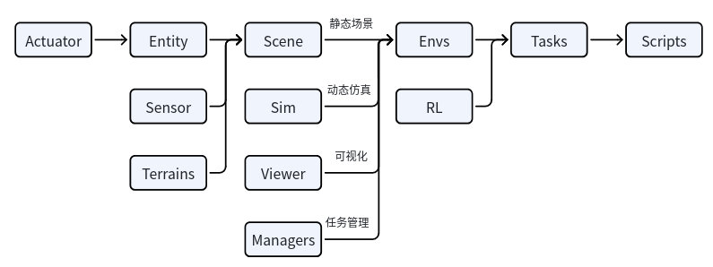
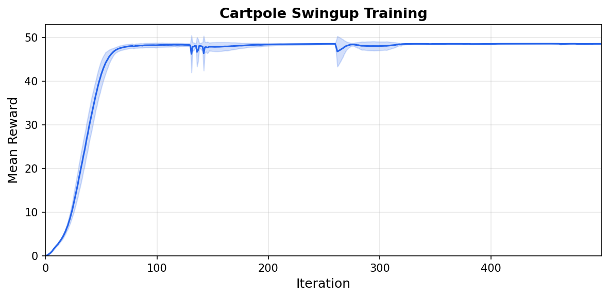

Mjlab学习——文件架构（Mjlab Learning - File Structure）

Utils
该目录汇集通用工具函数与基础设施（如日志、随机数、MuJoCo 辅助、配置与类型工具、包装器等），用于减少重复实现并为各模块提供共享能力支撑。
概念框架
Mjlab is organized into two layers: a simulation layer that models the robot and world, and a manager layer that defines the reinforcement learning problem on top of it. Understanding this separation is the fastest way to build a mental map of the system.

Entities are composed into an MjSpec, compiled, and transferred to MuJoCo Warp for GPU simulation. The ManagerBasedRlEnv orchestrates the MDP; RSL-RL handles training.
The simulation layer
Scene pipeline. mjlab constructs scenes by composing
entity descriptions into a single MjSpec.
Each entity starts from an MJCF
file loaded via MjSpec.from_file(). Users who define
everything in XML can use this directly. For more control, Python
dataclasses can extend or override properties on the loaded spec:
actuators, collision rules, materials, sensors, and initial state. This
hybrid approach lets users start from existing MuJoCo models and layer
on task-specific configuration without modifying the original XML. The
composed specification is compiled into an MjModel on the
CPU, then transferred to the GPU via MuJoCo
Warp, which is built on NVIDIA Warp.
MuJoCo Warp. MuJoCo Warp is a GPU-accelerated
backend for MuJoCo. It preserves MuJoCo’s
MjModel/MjData paradigm but adds a leading
world dimension: a single MjData object holds the
state of N independent simulation instances in parallel, enabling
thousands of environments to be stepped simultaneously. Model parameters
are shared across all worlds by default, and individual fields can be
expanded to vary per-world when domain randomization requires it. mjlab
captures the simulation step as a CUDA graph: the
kernel execution sequence is recorded once and replayed on subsequent
calls, eliminating CPU-side dispatch overhead.
Components. The simulation layer provides four core components, each with its own documentation page:
Entity: a robot, a manipulated object, or a static object such as terrain, defined by an MJCF description plus optional Python configuration for actuators, collision rules, and initial state.
Actuators: how entities are controlled. Users can wrap actuators already defined in MJCF or create new ones from Python configuration.
Sensors: how the world is observed. Includes MuJoCo-native sensors as well as custom sensors like RGB-D cameras and raycasters.
Scene: scene composition and environment placement.
The manager layer
On top of the simulation layer, mjlab adopts the manager-based environment design introduced by Isaac Lab. Users define their environment by composing small, self-contained terms (reward functions, observation computations, domain randomization events) and register them with the appropriate manager. Each manager handles the lifecycle of its terms: calling them at the right point in the simulation loop, aggregating their outputs, and exposing diagnostics.
Terms can be plain functions for stateless computations, or classes
that inherit from ManagerTermBase when they need to cache
expensive setup (such as resolving regex patterns to joint indices at
initialization) or maintain per-episode state through a
reset() hook.
Environments are configured through
ManagerBasedRlEnvCfg, a plain dataclass that holds term
configuration dictionaries for each manager.
1 | from mjlab.envs import ManagerBasedRlEnvCfg |
The eight managers
ObservationManager: assembles observation groups with configurable processing (clipping, noise, delay, history). Supports asymmetric actor-critic. See Observations.
ActionManager: routes the policy’s output tensor to entity actuators, handling scaling and offset. See Actions.
RewardManager: computes a weighted sum of reward terms, scaled by step duration for frequency invariance. See Rewards.
TerminationManager: evaluates stop conditions, distinguishing terminal resets from timeouts. See Terminations.
EventManager: fires terms at lifecycle points (startup, reset, interval). Domain randomization is implemented through event terms. See Events and Domain Randomization.
CommandManager: generates and resamples goal signals (velocity targets, pose targets). See Commands.
CurriculumManager: adjusts training conditions based on policy performance. See Curriculum.
MetricsManager: logs custom per-step values as episode averages. See Metrics.
For the full configuration reference covering all managers, see Environment Configuration.
The environment lifecycle
Each environment instance passes through four phases.
Build.
Scenecomposes entity MJCF files viaMjSpecand compilesMjModelon the CPU.Simulationuploads the model to the GPU via MuJoCo Warp, allocating a singleMjDatawith N parallel worlds. CUDA graphs forstep,forward,reset, andsenseare captured.Initialize. Managers are constructed from the term configuration dictionaries. Regex patterns are matched to joint, body, and geom indices. Observation history and delay buffers are allocated. Model fields required by domain randomization terms are expanded from shared to per-world storage, and CUDA graphs are rebuilt to reflect the new layout. Startup events are fired once.
Reset. Called at the start of training and whenever an environment terminates or times out. The
EventManagerfiresresetterms, which return the scene to an initial state with optional randomization. Command targets are resampled. Observation history buffers are cleared.Step. The policy action is processed by the
ActionManager. The physics simulation advancesdecimationtimes, with actuator commands applied and entity state updated each sub-step. After the decimation loop, theTerminationManagerchecks stop conditions, theRewardManagercomputes the reward signal, and any terminated environments are reset. A singleforward()call refreshes derived quantities for all environments. TheCommandManageradvances or resamples goals. Interval events fire if scheduled. Sensors update. TheObservationManagerassembles the observation for the next policy query.
The step sequence in order:
1 | action_manager.process_action(action) |
With this mental model in place, the Concepts pages cover each simulation layer component in detail, and The Manager Layer pages walk through each manager's configuration and built-in terms.
Registration and training
The last step is to register the task so it can be launched by name.
Each registration pairs an environment config with an RL config that
specifies the network architecture and PPO hyperparameters. For cartpole
a small network of two 64 unit hidden layers is plenty. The full RL
config is in cartpole_env_cfg.py alongside the environment
config.
This goes in init.py:
1 | register_mjlab_task( |
Train:
1 | uv run train Mjlab-Cartpole-Swingup --num-envs 4096 |
Play back a trained checkpoint, either from a local file or a W&B run:
1 | uv run play Mjlab-Cartpole-Swingup --checkpoint-file logs/rsl_rl/cartpole/model_500.pt |

Mean reward over 5 seeds (shaded: one standard deviation).
Config fields can be overridden from the CLI:
1 | uv run train Mjlab-Cartpole-Swingup \ |
Next steps
Add observation noise. The current config has no noise, so the policy is brittle. Add noise to any observation term to train a more robust policy:
1 | from mjlab.utils.noise import UniformNoiseCfg |
Randomize the physics. Use the Domain Randomization system to vary pole mass or joint damping across environments, training a policy that transfers across physical variations.
Explore other tasks. The library ships with
locomotion, manipulation, and motion tracking tasks you can run out of
the box: Mjlab-Velocity-Flat-Unitree-Go1,
Mjlab-Lift-Cube-Yam, and
Mjlab-Tracking-Flat-Unitree-G1, among others. Reading their
source shows how more complex observation and reward structures are
composed.
Build something new. The cartpole is intentionally minimal. Once you are comfortable with the pieces, try designing your own robot model and task from scratch. The same pattern applies regardless of how complex the system becomes.